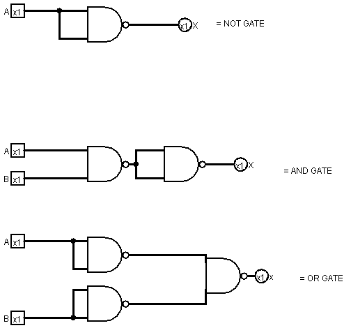
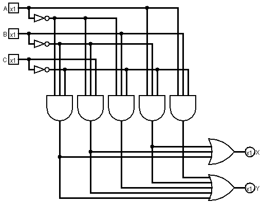
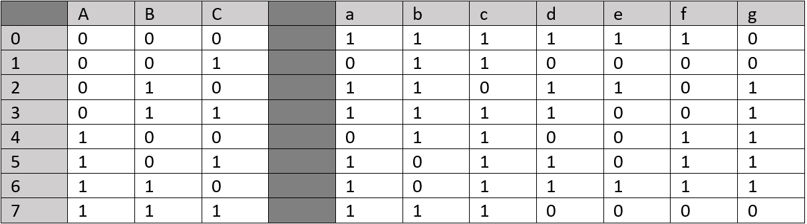
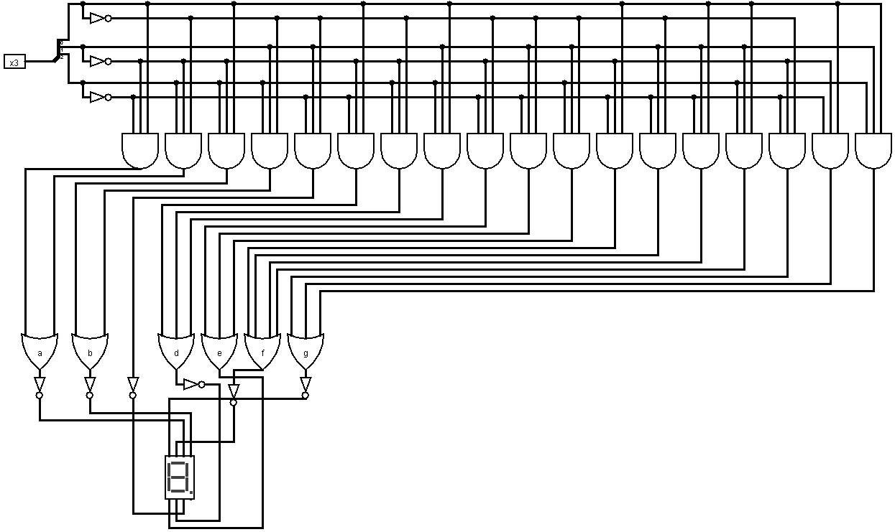

Oefening 3
- Een NOT-poort kan worden gemaakt door beide ingangen van een NAND-poort te verbinden met hetzelfde signaal.
- Een AND-poort wordt geconstrueerd door de uitgang van een NAND-poort te nemen en deze door een andere NAND-poort te voeren die als NOT-poort fungeert.
- Een OR-poort constructie wordt gerealiseerd door de negatie van elke input door een aparte NAND-poort (gebruikt als een NOT-poort) te voeren en vervolgens de uitgang van deze twee NAND-poorten naar een derde NAND-poort te leiden.

Oefening 4
Eerst leiden we de Booleaanse uitdrukkingen af en later implementeren we deze dan in Logisim.
X = (!A.!B.!C) + (!A.!B.C) + (A.!B.!C)
Y = (!A.!B.!C) + (!A.!B.C) + (A.!B.!C) + (!A.B.!C) + (A.B.!C)

Oefening 5
Eerst hebben we een letter gegeven aan elk 'lampje' van het 7 segmenten display.(behalve het kleine puntje)

Op basis van dit en hetgeen wat we in de opgave hebben gekregen, hebben we vervolgens een waarheidstabel opgebouwd voor elke letter.

Nu kunnen wij de Booleaanse algebra hiervan afleiden. Aangezien er veel nullen staan in de tabel hebben we ervoor gekozen, om in plaats van, voor elke letter naar de 1-en te kijken, naar de nullen te kijken, bij de letters die minder nullen dan 1-en hebben.
!a = (!A.!B.C) + (A.!B.!C)
!b = (A.!B.C) + (A.B.!C)
!c = (!A.B.!C)
!d = (!A.!B.C) + (A.!B.!C) + (A.B.C)
e = (!A.!B.!C) + (!A.B.!C) + (A.B.!C)
f = (!A.!B.!C) + (A.!B.!C) + (A.!B.C) + (A.B.!C)
!g = (!A.!B.!C) + (!A.!B.C) + (A.B.C)
Als we dit implementeren in Logisim krijgen we het volgende:
